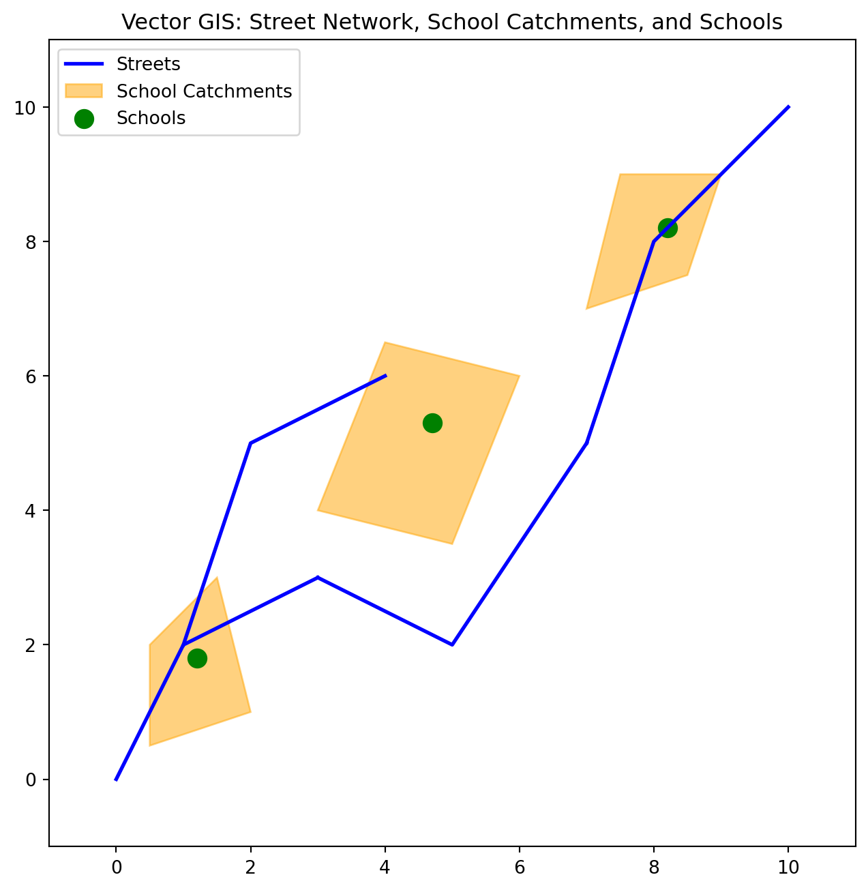

Earlier in the course we had a figure to illustrate vector spatial data:
Vector GIS
This figure was built with the following code:
import matplotlib.pyplot as pltfrom matplotlib.patches import Polygon as MplPolygon# Data for streets (line strings)streets = [ [(0, 0), (1, 2), (3, 3)], [(3, 3), (5, 2), (7, 5)], [(7, 5), (8, 8), (10, 10)], [(1, 2), (2, 5), (4, 6)],]# Data for school catchments (polygons)catchments = [ [(0.5, 0.5), (2, 1), (1.5, 3), (0.5, 2)], [(3, 4), (5, 3.5), (6, 6), (4, 6.5)], [(7, 7), (8.5, 7.5), (9, 9), (7.5, 9)],]# Adjusting the data for one school per catchmentschools = [(1.2, 1.8), (4.7, 5.3), (8.2, 8.2)]# Plotting the GIS map with one school per catchmentfig, ax = plt.subplots(figsize=(8, 8))# Plotting the streets with one legend entryax.plot(*zip(*streets[0]), color='blue', linewidth=2, label="Streets")for street in streets[1:]: street_x, street_y =zip(*street) ax.plot(street_x, street_y, color='blue', linewidth=2)# Plotting the catchments with legendfor i, catchment inenumerate(catchments): polygon = MplPolygon(catchment, closed=True, color='orange', alpha=0.5, edgecolor='black') ax.add_patch(polygon)if i ==0: polygon.set_label("School Catchments")# Plotting the schools (points) with one per catchmentschool_x, school_y =zip(*schools)ax.scatter(school_x, school_y, color='green', s=100, label="Schools")# Set the legend and titleax.legend()ax.set_title('Vector GIS: Street Network, School Catchments, and Schools')ax.set_xlim(-1, 11)ax.set_ylim(-1, 11)ax.set_aspect('equal')# Save the figure to a fileplt.savefig("vector.png", dpi=300)# Show the plotplt.show()
/tmp/ipykernel_1351698/1512531908.py:33: UserWarning: Setting the 'color' property will override the edgecolor or facecolor properties.
polygon = MplPolygon(catchment, closed=True, color='orange', alpha=0.5, edgecolor='black')

Here, we are faking it regarding a GIS, as matplotlib is a visualization library and doesn’t actually allow us to do any spatial analysis per se.
Fortunately, there are a number of Python packages that are designed to wrangle spatial data:
Points are zero-dimensional geometries, and thus have 0 area and 0 length:
school_0.area
0.0
school_0.length
0.0
list(school_0.coords)
[(1.2, 1.8)]
list(school_2.coords)
[(8.2, 8.2)]
LineStrings are one-dimensional geometric objects, having length but 0 area
street_1.length
5.841619252963779
street_1.area
0.0
Finally, Polygons are two-dimensional geometric objects, having area:
catchment_1.area
5.5
as well as length:
catchment_1.length
9.508270432752164
geometry methods and spatial predicates
The power of these geometries comes from the functions and abilities to evaluate spatial predicates. These give us the building blocks of GIS operations for vector spatial data:
To see this, we can call the distance method of school_0 to determine the distance separating it from school_2:
school_0.distance(school_2)
9.4847245611035
We can also measure the difference between objects of different geometry types:
All the area, distance, and other measurements done with shapely objects utilize Cartesian coordinates.
GeoPandas
GeoPandas(Jordahl et al. 2020) is a python package that makes working with geospatial data easier. It relies on shapely and other libraries to extend the datatypes used by Pandas to allow spatial operations on geometric types.
The two important classes in GeoPandas are:
GeoSeries
GeoDataFrame
These are spatial extensions of the Series and DataFrame classes from pandas.
import and aliasing
import geopandas as gpd
GeoSeries
A GeoSeries is essentially a pandasSeries object designed to store shapely geometry types:
streets = gpd.GeoSeries(street_lines)
streets.plot()
catchments = gpd.GeoSeries(catchment_polygons)
catchments.plot()
schools = gpd.GeoSeries(school_points)
schools.plot()
type(schools)
geopandas.geoseries.GeoSeries
GeoDataFrame
A GeoDataFrame is similar to a pandas DataFrame but includes at least one GeoSeries and supports spatial operations on its data.
A GeoDataFrame can contained more than a single GeoSeries but only one can be operative as far as the geometry attribute is concerned. To see this, let’s add a second GeoSeries to the catchments GeoDataFrame:
catchments_gdf.centroid
0 POINT (1.17544 1.60526)
1 POINT (4.5 5)
2 POINT (7.96667 8.13333)
dtype: geometry
Jordahl, Kelsey, Joris Van den Bossche, Martin Fleischmann, Jacob Wasserman, James McBride, Jeffrey Gerard, Jeff Tratner, et al. 2020. “Geopandas/Geopandas: V0.8.1.” Zenodo. https://doi.org/10.5281/zenodo.3946761.
Source Code
---title: GeoPandasformat: html: code-fold: falsejupyter: python3execute: cache: true---## Geometries for Vector Spatial DataEarlier in the course we had a figure to illustrate vector spatial data:This figure was built with the following code:```{python}import matplotlib.pyplot as pltfrom matplotlib.patches import Polygon as MplPolygon# Data for streets (line strings)streets = [ [(0, 0), (1, 2), (3, 3)], [(3, 3), (5, 2), (7, 5)], [(7, 5), (8, 8), (10, 10)], [(1, 2), (2, 5), (4, 6)],]# Data for school catchments (polygons)catchments = [ [(0.5, 0.5), (2, 1), (1.5, 3), (0.5, 2)], [(3, 4), (5, 3.5), (6, 6), (4, 6.5)], [(7, 7), (8.5, 7.5), (9, 9), (7.5, 9)],]# Adjusting the data for one school per catchmentschools = [(1.2, 1.8), (4.7, 5.3), (8.2, 8.2)]# Plotting the GIS map with one school per catchmentfig, ax = plt.subplots(figsize=(8, 8))# Plotting the streets with one legend entryax.plot(*zip(*streets[0]), color='blue', linewidth=2, label="Streets")for street in streets[1:]: street_x, street_y =zip(*street) ax.plot(street_x, street_y, color='blue', linewidth=2)# Plotting the catchments with legendfor i, catchment inenumerate(catchments): polygon = MplPolygon(catchment, closed=True, color='orange', alpha=0.5, edgecolor='black') ax.add_patch(polygon)if i ==0: polygon.set_label("School Catchments")# Plotting the schools (points) with one per catchmentschool_x, school_y =zip(*schools)ax.scatter(school_x, school_y, color='green', s=100, label="Schools")# Set the legend and titleax.legend()ax.set_title('Vector GIS: Street Network, School Catchments, and Schools')ax.set_xlim(-1, 11)ax.set_ylim(-1, 11)ax.set_aspect('equal')# Save the figure to a fileplt.savefig("vector.png", dpi=300)# Show the plotplt.show()```Here, we are faking it regarding a GIS, as matplotlib is a visualization library and doesn't actually allow us to do any spatial analysis per se.Fortunately, there are a number of Python packages that are designed to wranglespatial data:- shapely- GeoPandas## shapely[Shapely](https://shapely.readthedocs.io/en/stable/manual.html)[@shapely2007] is a Python package for the manipulation and analysis of [planar]( https://www.merriam-webster.com/dictionary/planar)geometric objects.We can use shapely to build up our example, starting with its `Point` class:```{python}from shapely import Point```The `Point` class can be used to create instances for each of our schools, hereusing a python [list comprehension](https://www.w3schools.com/Python/python_lists_comprehension.asp):```{python}school_points = [Point(school) for school in schools]```This results in a python list containing three shapely point objects:```{python}school_points```If we ask for the first point, we get a rendered point.```{python}school_points[0]```And, if we unpack the list into individual points, we should see similar behavior.```{python}school_0, school_1, school_2 = school_points``````{python}school_0``````{python}school_1``````{python}school_2```Just like we did for points, we can rely on shapely for dealing with ourcatchments, but this time using the `Polygon` class:```{python}from shapely import Polygon``````{python}catchment_polygons = [Polygon(catchment) for catchment in catchments]``````{python}catchment_0, catchment_1, catchment_2 = catchment_polygons``````{python}catchment_0``````{python}catchment_1``````{python}catchment_2```And, finally, we can model the road network using the `LineString` class:```{python}from shapely import LineString``````{python}street_lines = [LineString(street) for street in streets]``````{python}street_0, street_1, street_2, street_3 = street_lines``````{python}street_0``````{python}street_1``````{python}street_2``````{python}street_3```### shapely Geometry Types```{python}school_0.geom_type``````{python}school_2.geom_type```Points are zero-dimensional geometries, and thus have 0 area and 0 length:```{python}school_0.area``````{python}school_0.length``````{python}list(school_0.coords)``````{python}list(school_2.coords)```LineStrings are one-dimensional geometric objects, having length but 0 area```{python}street_1.length``````{python}street_1.area```Finally, Polygons are two-dimensional geometric objects, having area:```{python}catchment_1.area```as well as length:```{python}catchment_1.length```### geometry methods and spatial predicatesThe power of these geometries comes from the functions and abilities to evaluate[spatial predicates](https://shapely.readthedocs.io/en/stable/predicates.html). Thesegive us the building blocks of GIS operations for vector spatial data:To see this, we can call the `distance` method of `school_0` to determine thedistance separating it from `school_2`:```{python}school_0.distance(school_2)```We can also measure the difference between objects of different geometry types:```{python}street_1.geom_type``````{python}school_0.distance(street_1)``````{python}catchment_0.geom_type``````{python}catchment_0.area``````{python}list(catchment_0.exterior.coords)``````{python}catchment_0.bounds``````{python}school_0.distance(catchment_0)``````{python}catchment_0.contains(school_0)``````{python}catchment_0.contains(school_1)``````{python}school_1.distance(catchment_0)```::: {.callout-note}All the area, distance, and other measurements done with shapely objects utilize[Cartesian coordinates](https://shapely.readthedocs.io/en/stable/manual.html#coordinate-systems).:::## GeoPandas[GeoPandas](https://geopandas.org/en/stable/)[@kelsey_jordahl_2020_3946761] is apython package that makes working with geospatial data easier. It relies onshapely and other libraries to extend the datatypes used by Pandas to allowspatial operations on geometric types.The two important classes in GeoPandas are:- `GeoSeries`- `GeoDataFrame`These are spatial extensions of the `Series` and `DataFrame` classes from `pandas`.### import and aliasing```{python}import geopandas as gpd```### GeoSeriesA [`GeoSeries`](https://geopandas.org/en/stable/docs/reference/geoseries.html) is essentially a `pandas``Series` object designed to store`shapely` geometry types:```{python}streets = gpd.GeoSeries(street_lines)``````{python}streets.plot()``````{python}catchments = gpd.GeoSeries(catchment_polygons)``````{python}catchments.plot()``````{python}schools = gpd.GeoSeries(school_points)``````{python}schools.plot()``````{python}type(schools)```### GeoDataFrameA[`GeoDataFrame`](https://geopandas.org/en/stable/docs/reference/geodataframe.html)is similar to a pandas DataFrame but includes at least one `GeoSeries` andsupports spatial operations on its data.```{python}schools_gdf = gpd.GeoDataFrame(geometry=schools)``````{python}schools_gdf.head()``````{python}type(schools_gdf)``````{python}schools_gdf['students'] = [124, 94, 100]``````{python}schools_gdf.head()``````{python}schools_gdf.plot()``````{python}schools_gdf.plot(column='students')``````{python}streets_gdf = gpd.GeoDataFrame(geometry=streets)``````{python}streets_gdf.plot()``````{python}streets_gdf['length'] = streets_gdf.length``````{python}streets_gdf.head()``````{python}streets_gdf.plot(column='length', legend=True)``````{python}catchments_gdf = gpd.GeoDataFrame(geometry=catchment_polygons)``````{python}catchments_gdf['area'] = catchments_gdf.areacatchments_gdf.plot(column='area', legend=True)```### The `geometry` of a GeoDataFrameOne of the key differences between a `GeoDataFrame` and a pandas `DataFrame` isthat the former will have a `geometry` column that holds a `GeoSeries`:```{python}catchments_gdf.geometry``````{python}catchments_gdf.head()```A `GeoDataFrame` can contained more than a single `GeoSeries` but only one canbe operative as far as the `geometry` attribute is concerned. To see this, let'sadd a second `GeoSeries` to the catchments `GeoDataFrame`:```{python}catchments_gdf.centroid``````{python}catchments_gdf['centroid_point'] = catchments_gdf.centroidcatchments_gdf.head()```Now we can set the geometry to be the `centroid_point``GeoSeries`:```{python}catchments_gdf.set_geometry('centroid_point', inplace=True)catchments_gdf.plot()```And we could return to the polygons with:```{python}catchments_gdf.set_geometry('geometry', inplace=True)catchments_gdf.plot()```<!-- ## Southern California Census Tracts --><!-- ```{python} --><!-- gdf = gpd.read_parquet("~/data/scag_region.parquet") --><!-- ``` --><!-- ```{python} --><!-- gdf.shape --><!-- ``` --><!-- ```{python} --><!-- type(gdf) --><!-- ``` --><!-- ```{python} --><!-- gdf.head() --><!-- ``` --><!-- ```{python} --><!-- gdf.columns.values --><!-- ``` --><!-- ```{python} --><!-- gdf.n_total_pop --><!-- ``` --><!-- ```{python} --><!-- gdf.geometry --><!-- ``` --><!-- ```{python} --><!-- gdf.plot() --><!-- ``` --><!-- ## Projections --><!-- ```{python} --><!-- gdf.crs --><!-- ``` --><!-- ```{python} --><!-- gdf1 = gdf.to_crs(3857) --><!-- ``` --><!-- ```{python} --><!-- gdf1.crs --><!-- ``` --><!-- ```{python} --><!-- gdf1.plot() --><!-- ``` --><!-- ```{python} --><!-- gdf.median_home_value --><!-- ``` --><!-- ```{python} --><!-- gdf.plot(column='median_home_value') --><!-- ``` --><!-- ```{python} --><!-- gdf.plot(column='median_home_value', legend=True) --><!-- ``` --><!-- ```{python} --><!-- gdf.plot(column='median_home_value', legend=True, --><!-- scheme='quantiles', k=10) --><!-- ``` --><!-- ```{python} --><!-- gdf.plot(column='p_hispanic_persons', legend=True, --><!-- scheme='quantiles', k=10) --><!-- ``` --><!-- ```{python} --><!-- gdf.explore(column='p_hispanic_persons', tooltip=['geoid', 'p_hispanic_persons']) --><!-- ``` --><!-- ```{python} --><!-- gdf.head() --><!-- ``` --><!-- ```{python} --><!-- county = gdf.geoid.str[:5] --><!-- ``` --><!-- ```{python} --><!-- county --><!-- ``` --><!-- ```{python} --><!-- gdf['county'] = county --><!-- ``` --><!-- ## Which county has the most tracts? --><!-- ```{python} --><!-- gdf.groupby(by='county').count() --><!-- ``` --><!-- ## Which county has the largest tract in area? --><!-- ```{python} --><!-- gdf['area'] = gdf1.area --><!-- ``` --><!-- ```{python} --><!-- gdf[['area', 'county']].sort_values(by='area', ascending=False) --><!-- ``` --><!-- ```{python} --><!-- gdf.columns.values --><!-- ``` --><!-- ```{python} --><!-- gdf.n_total_pop_sample --><!-- ``` --><!-- ## Geopandas --><!-- - GeoSeries --><!-- - GeoDataFrame --><!-- - County variable --><!-- - area/crs/project --><!-- - population density --><!-- ## Studio --><!-- - Report number of tracts by county --><!-- - Median population tract population density by county --><!-- - Population density by county --><!-- - two group bys and division --><!-- - later show them dissove -->